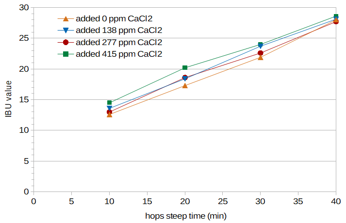

Abstract
A paper by Sebastian Kappler et al. (2010) implies that the addition of calcium chloride to the mash or wort may result in a significant reduction in IBUs. In this blog post, I evaluate IBU levels as a function of the amount of calcium chloride added to the wort. These results show that the effect of calcium chloride on IBUs, if any, is very minor.
1. Introduction
1.1 Calcium Chloride
Calcium Chloride (CaCl2) is often added to the mash. The use of this salt adds calcium, which "promotes enzyme activity in the mash, ... trub formation, yeast metabolism, and yeast flocculation" [Palmer & Kaminski, p. 147]. Calcium levels between 50 and 200 ppm in the mash are recommended [Palmer & Kaminski, p. 147]. This salt also adds chloride, which provides a "rounder, fuller, sweeter quality to the malt character and the beer" [Palmer & Kaminski, p. 148]. The recommended maximum chloride level in the mash is 200 ppm [Palmer & Kaminski, p. 149].
Calcium chloride and calcium sulfate (which provides a more "assertive" hop character) are sometimes used together, with a ratio of the two salts targeting a particular flavor profile [Palmer & Kaminski, pp. 149-150].
1.2 The Effect of Calcium Chloride on the Recovery of IAA
Kappler et al. added isomerized alpha acids (IAA) to wort or distilled water at a concentration of 100 ppm and looked at the amount of IAA they were able to recover after boiling [Kappler et al.]. (They did not use the boil to create IAA from alpha acids; they simply added pre-isomerized IAA to the wort or water. This gave them greater control over knowing the initial concentration of IAA.) They varied the boil time, temperature, pH, original gravity, and concentration of various salts. The recovery rate of IAA reflects the amount of IAA lost to precipitation and/or chemical transformation. For example, at a pH of 5.0 they recovered 80% of the IAA that they added, and at a pH of 6.0 they recovered 86% of the added IAA [Kappler et al., p. 334]. Therefore, pH has a fairly small effect on the losses of IAA within this range of pH values, with relative IAA losses only 7% greater at pH 5.0 than at pH 6.0. (Most brewers work in the pH range of 5.2 to 5.8, and so IAA losses due to pH changes will then be generally much less than 7% in practice.)
Much more surprising was the recovery rate of IAA as a function of the concentration of calcium chloride. With no added salts (i.e. when boiled in pure water for 60 minutes), they recovered 83% of the IAA. When they added 200 ppm of CaCl2 to the water, they recovered only 51% of the IAA, and when they added 500 ppm of CaCl2, they recovered only 43% of the IAA [Kappler et al., p. 335]. This implies that the use of calcium chloride can have a dramatic impact on the losses of IAA during the boil and may therefore cause a large reduction in IBU values of beer. (A level of 500 ppm of (presumably anhydrous) CaCl2 translates into 180.55 ppm of calcium (Ca+2)) and 319.45 ppm of chloride (Cl–). This level of chloride is much greater than the maximum recommended level of 200 ppm. The concentration of 200 ppm of CaCl2, however, is quite reasonable in the concentrations of both calcium (72 ppm) and chloride (128 ppm).)
1.3 Normalizing for pH
Adding CaCl2 to the mash will lower the mash (and wort) pH because the calcium "reacts with malt phosphate ... to precipitate calcium phosphates and release hydrogen ions, which in turn lower[s] the mash pH" [Palmer & Kaminski, p. 45]. Kappler et al. used distilled water in their test of CaCl2; the addition of CaCl2 to pure water will also lower the pH. The wort pH has an effect on IBUs, with a lower pH yielding lower IBU values. Therefore, in order to separate out the overall effect of CaCl2 from the effect of pH on IBUs, the wort pH of all conditions should be normalized to the same level.
2. Approach
The general approach used in this experiment was to create four conditions (i.e. four batches of beer) with different concentrations of calcium chloride (ranging from 0 to 415 ppm) and the same wort pH. For each condition, the wort was brought to a boil and samples were taken after 10, 20, 30, and 40 minutes of hop steep time. All sixteen samples were fermented into beer. The resulting IBU values were then plotted to evaluate the effect of calcium chloride on IBUs. Because this plot showed very little impact of calcium chloride, further analysis and modeling was not necessary.
3. Experimental Methods
I brewed four batches of beer for this experiment. The four batches were designed to be identical in all respects except for the concentration of CaCl2 in the wort.
I made one large pool of wort from which all four batches were created, with 14.73 lbs (6.68 kg) of Briess Pilsen DME in 7.957 G (30.12 l) of water, yielding 9.00 G (34.07 l) of wort with a specific gravity of 1.074. I then created each condition with 2.125 G (8.044 l) of this wort and an additional 2.125 G (8.044 l) of water, yielding wort with gravity 1.037 and pH approximately 5.90.
I then added the amounts of (anhydrous) CaCl2 listed in Table 1 to create conditions A through D. I used a previously unopened package of CaCl2 from Brewcraft, which I have previously found, according to the safety data sheet, to be anhydrous. I heated 30.41 g of this in an oven at 400°F (~200°C) for two hours to remove any water that may have been absorbed by the calcium chloride. The result weighed 28.72 g, indicating the presence of a very small amount of water in the original product.
The tap water here in Portland, Oregon contains low levels of calcium and chloride, and I ignored these existing levels for this preliminary study. The reported concentrations of calcium and chloride in this experiment are therefore somewhat lower than the levels actually present in the wort.
| Condition | added CaCl2 (ppm) | added Ca+2 (ppm) | added Cl– (ppm) | added weight of CaCl2 (g) |
| A | 0 | 0 | 0 | 0 |
| B | 138 | 50.0 | 88.46 | 2.163 |
| C | 277 | 100.0 | 176.92 | 4.327 |
| D | 415 | 150.0 | 265.38 | 6.490 |
I let all four batches of wort sit overnight to let the pH fully stabilize. (Other than the time required for pH stabilization, I have found no difference in the characteristics of wort created from Briess Pilsen DME or wort created from two-row malt and low-alkalinity water, at least in terms of pH behavior.) The next day, I added phosphoric acid to lower the pH of each condition as closely as I could to a target pre-boil room-temperature pH of 5.74. (Before adding phosphoric acid, the pH of Conditions A through D were 5.92, 5.88, 5.84, and 5.83, respectively. The target pH of 5.74 was designed to make Condition A in this experiment a replication of Condition A in a previous experiment.)
I used hops from a 1 lb (0.45 kg) bag of Citra HBC394 from Hops Direct that were purchased soon after harvest and subsequently stored in a vacuum-sealed bag in my freezer. This bag had an alpha-acid rating on the package of 14.3%. With an assumed 25% six-month room-temperature loss for Citra, a storage temperature of –5°F (–20°C), a storage factor of 0.6, and an age of 12 months, the freshness factor predicted by Garetz [Garetz, pp. 110-118] is 0.948, yielding an AA rating of 13.5% on brew day. Each condition used 0.694 oz (19.675 g) of hops, targeting 170 ppm of alpha acids. During the boil, I contained the hops in a large nylon coarse-mesh bag in order to not include large hop particles in my samples. Previous experiments (from Brülosophy and Four Experiments on Alpha-Acid Utilization and IBUs) have not shown a significant impact of a mesh bag on measured IBU values.
I heated each condition to boiling, and then boiled the wort for 10 minutes with the cover off to allow initial foam to dissipate. After this 10 minutes of boiling, I added the hops and covered the kettle. I then boiled the wort with the cover on (except for taking samples) in order to minimize evaporation losses (and therefore changes to specific gravity and IAA concentration). At 10-minute intervals after adding the hops, I took 14-oz (0.41-liter) samples, quickly cooled them to room temperature in an ice bath, and stored them in sanitized containers. After the boil, I measured the pH of the wort with a sanitized probe, aerated each sample by vigorous shaking for 1 minute, and pitched approximately 0.008 oz (0.22 g) of Safale US-05 yeast (age 8 months) to target 750,000 viable cells per ml and degree Plato [Fix and Fix, p. 68]. After all samples were taken, the containers were cracked open to vent CO2, and they fermented for over a week. I then sent 4 oz (0.12 l) of each sample to Oregon BrewLab for IBU and original-gravity measurements, and received results 11 days after the start of fermentation. The final gravity of all samples was, on average, 1.0033 (minimum 1.0030; maximum 1.0045).
4. Experimental Results
Tables 2 and 3 provide data for each condition, including the measured pre-boil pH, pre-boil specific gravity, post-boil gravity and volume, and (for each sample) post-boil pH, beer pH, original gravity, and IBUs. (The original gravity of each sample and IBUs were measured by Oregon BrewLab.) Figure 1 shows the measured IBU values for each condition and sample time.
The pH values of each sample show an expected decrease in pH with boil time [MacWilliam, p. 68], with an average decrease of 0.022 pH units every 10 minutes. If we estimate the pre-boil pH from the set of pH values taken at each sample time in Table 3, the estimated pre-boil pH values are equal to the observed pre-boil pH values for all conditions except Condition B. For Condition B, the estimated pre-boil pH is 5.78 and the measured pre-boil pH is 5.74.
The specific gravity values changed very little during the boil, as expected because the kettle was covered. The first sample (at 10 minutes steep time) had a gravity of about 1.038 or 1.039, and the final sample (at 40 minutes steep time) had a gravity of 1.039 or maybe 1.040. (There is less of a discrepancy between my hydrometer readings and the gravity values reported by Oregon BrewLab, when compared with a previous experiment, because I used a different hydrometer. Oregon BrewLab reported measurements in degrees Plato, and I converted those values to specific gravity using an equation from Spencer Thomas.)
The beer pH values are all within 0.08 units of each other, from 3.94 to 4.02. It is possible that the pH decreases slightly as the concentration of calcium chloride increases, with an average beer pH of 4.01, 3.99, 3.98, and 3.96 for conditions A through D, respectively.
Figure 1 plots the measured IBU values for each condition and time point. It can be seen that there is no clear trend of how IBUs change as a function of the concentration of calcium chloride. It is possible that IBUs slightly increase with the concentration of CaCl2, because the IBUs of Condition D are, on average, 1.9 units greater than Condition A. However, the IBU values of Conditions B and C are nearly indistinguishable from each other, and not much greater than Condition A. Therefore, it is possible that there is a slight dependence of IBUs on calcium chloride, but if this effect exists, it is very minor. This possible trend of increasing IBUs with increasing concentration of calcium chloride is in the opposite direction of that suggested by Kappler's results [Kappler et al., p.335]. The difference in IBUs between these four conditions could just as easily be attributed to slightly different concentrations of alpha acids in the hops of each condition.
| Condition | measured pre-boil pH |
pre-boil SG (hydrometer) |
post-boil SG (hydrometer) |
post-boil volume |
| A | 5.72 | 1.0365 | 1.040 | 3.83 G / 14.49 l |
| B | 5.74 | 1.0365 | 1.039 | 3.82 G / 14.46 l |
| C | 5.74 | 1.0360 | 1.040 | 3.78 G / 14.29 l |
| D | 5.73 | 1.0357 | 1.040 | 3.84 G / 14.55 l |
| Condition A: | |||||
| time | 10 min | 20 min | 30 min | 40 min | |
| post-boil pH | 5.68 | 5.66 | 5.64 | 5.63 | |
| beer pH | 4.02 | 4.02 | 3.98 | 4.01 | |
| SG | 1.038 | 1.038 | 1.038 | 1.039 | |
| IBUs | 12.6 | 17.3 | 21.9 | 28.0 | |
| Condition B: | |||||
| time | 10 min | 20 min | 30 min | 40 min | |
| post-boil pH | 5.73 | 5.71 | 5.68 | 5.66 | |
| beer pH | 4.00 | 3.99 | 3.99 | 3.99 | |
| SG | 1.038 | 1.038 | 1.039 | 1.039 | |
| IBUs | 13.6 | 18.4 | 23.7 | 28.1 | |
| Condition C: | |||||
| time | 10 min | 20 min | 30 min | 40 min | |
| post-boil pH | 5.70 | 5.68 | 5.63 | 5.64 | |
| beer pH | 3.99 | 3.98 | 4.01 | 3.95 | |
| SG | 1.039 | 1.039 | 1.040 | 1.039 | |
| IBUs | 13.0 | 18.6 | 22.6 | 27.7 | |
| Condition D: | |||||
| time | 10 min | 20 min | 30 min | 40 min | |
| post-boil pH | 5.69 | 5.67 | 5.64 | 5.62 | |
| beer pH | 3.97 | 3.98 | 3.94 | 3.95 | |
| SG | 1.040 | 1.038 | 1.038 | 1.039 | |
| IBUs | 14.5 | 20.2 | 24.0 | 28.6 | |
 Figure 1. IBUs from each condition (different concentrations of calcium chloride) and sample time (time for which the hops steeped in the boiling wort). It can be seen that there is very little impact of calcium chloride on IBUs. If there is any effect, it is a slight increase in IBUs with the concentration of calcium chloride.
5. Conclusion and Discussion
The data in this experiment did not show any clear impact of calcium chloride on IBUs. There might be a minor effect of an increase in IBUs with increasing concentration of calcium chloride, but this effect might also be explained by other factors. There seems to be no need to include the concentration of this salt in a model for predicting IBUs.
The most obvious question raised by these results is why they are so different from the implications of Kappler's work. The 38% lower recovery rate of isomerized alpha acids with a concentration of 200 ppm of CaCl2 reported by Kappler [Kappler, p. 335] would easily be seen in the IBU measurement if this loss of IAA happened during brewing. My best guess is that the loss of IAA to trub during brewing masks any effect of calcium chloride; because Kappler used pure water instead of wort, either the calcium or the chloride was more easily able to bind with the IAA and cause it to transform or precipitate. However, this answer is not really satisfactory, since Kappler recovered 90% of the added IAA with a wort gravity of about 1.040 [Kappler, p. 335], which is even greater than the recovery rate when using pure water (82%).
I tasted all of the samples in order to evaluate the sensory claims made about calcium chloride. I found that Condition A had a taste that I described as "flat", Conditions B and C had a more pleasant taste, and Condition D tasted notably "salty". I could not taste any salt in Condition B, and I thought that Condition C had a noticeable, but not unpleasant, saltiness. These perceptions, although from only a single (and biased) subject, concur with the literature that calcium chloride can enhance the flavor of beer at lower concentrations, but that probably no more than 200 ppm of chloride should be present.
I'd like to thank Dana Garves at Oregon BrewLab for her analysis of the samples in this experiment. The consistency of the measured IBU values over different hop steep times (Figure 1) speaks to the high quality of her work.
References
Navigate to:
AlchemyOverlord home page